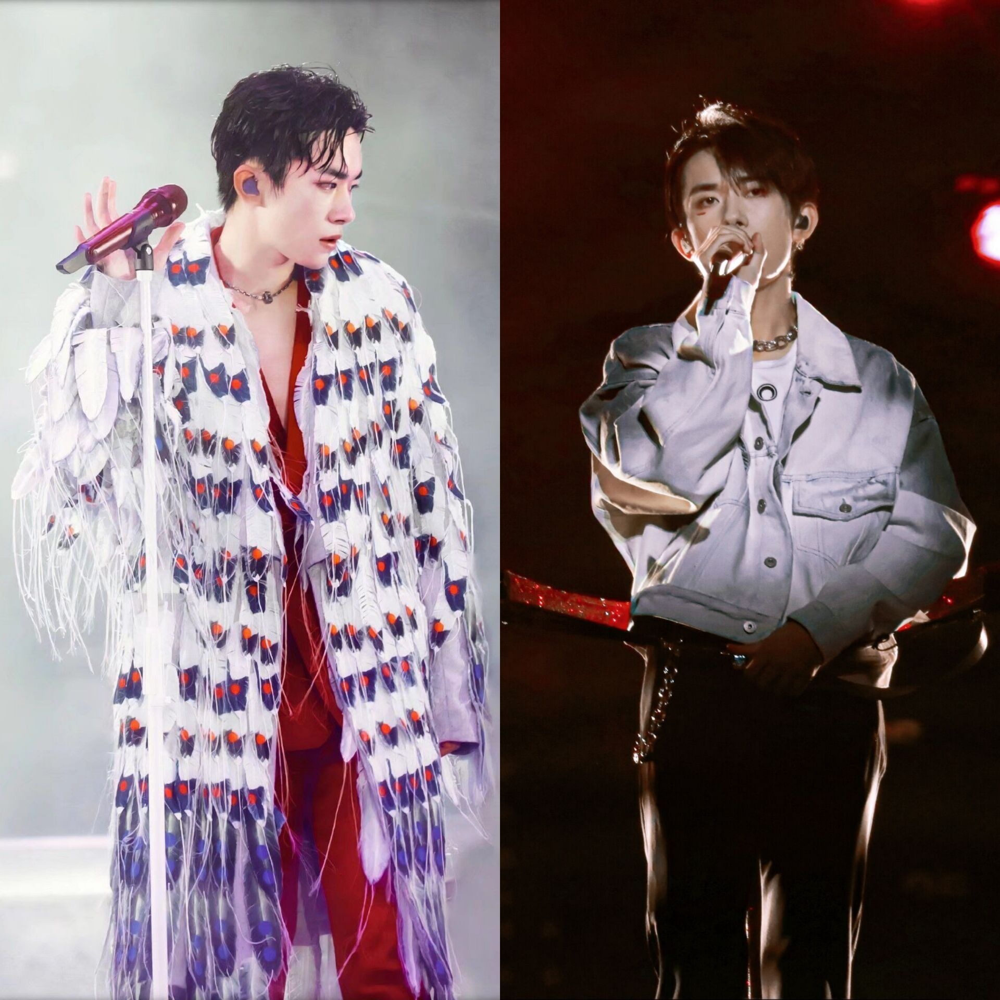
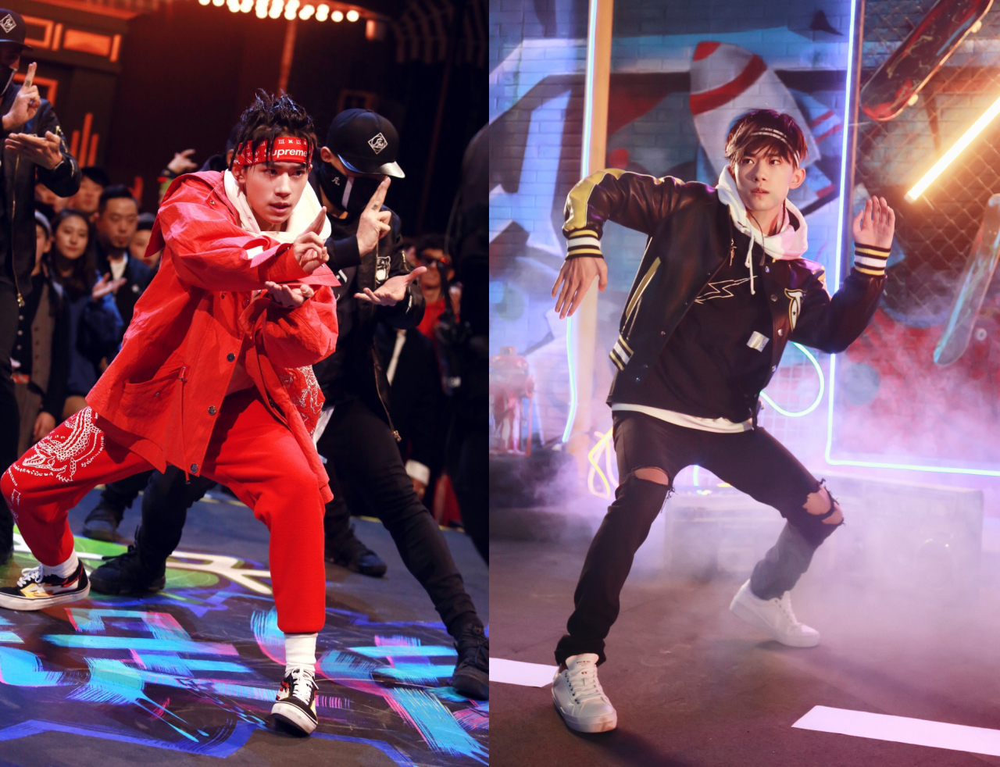
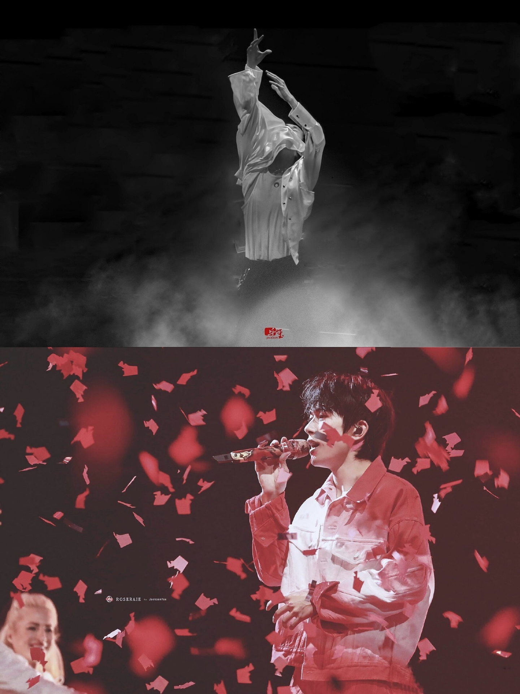

幼年时期
易烊千玺生于2000年，“烊”在其家乡湖南怀化是“欢迎”的意思。为了迎接、纪念千禧年，家里人为他取了一个特别的名字——易烊千玺。
2008年2月，参与中央电视台《我与北京共微笑》晚会录制。7月，参与中央电视台少儿频道《成长在线》节目 。8月，参与山西电视台《阳光少年》节目，获得冠军 。
飞炫少年
2009年，易烊千玺加入“飞炫少年”组合。8月，亮相《成长在线》特别节目《回首奥运》，演唱歌曲《北京欢迎你》和《我相信》。9月，随组合参与河南省第十一届运动会开幕式演出。11月27日，担任“风载我歌行”首都大学生校园歌手演唱会表演嘉宾。
2010年2月12日，随“飞炫少年”亮相山东卫视《飞向2010》——第四届全球华人网络春晚，表演歌舞《青苹果乐园》。3月27日，随组合夺得山东卫视《中华达人》节目冠军。同年，参演电视剧《铁梨花》，饰演少年张吉安，这是他的首部影视作品。
2011年1月26日，易烊千玺参与中央电视台少儿频道《音乐快递》节目，表演开场舞。6月，随组合参与天津卫视模仿秀节目《王者归来》。同年，参演电视剧《超装备小子》，饰演祥仔。同年底，易烊千玺退出“飞炫少年”组合。
独立发展
2012年3月，易烊千玺参加《向上吧！少年》北京赛区海选，进入全国百强。8月，参加中国网络电视台的网络选秀节目《宝贝来了》，演唱《火鸟》《MAMA》，并表演街舞、爵士舞、拉丁舞、蒙古舞、变脸等
2013年1月，易烊千玺与NBA球星沃恩·韦弗、姚宇等联袂主演励志微电影《追上去》。5月，参演改编自安达充短篇漫画《天使之锤》的微电影《蜗牛》，饰演男一号小时候。6月，参演《中国好声音》学员张赫宣单曲《爸爸》MV，饰演男主角少儿时期。
TFBOYS
2013年6月，易烊千玺获邀加入TF家族。8月6日，与王俊凯、王源组成加入中国内地少年组合TFBOYS并正式出道，是组合中的舞蹈担当。10月4日，于重庆举行《Heart梦·出发》首唱会。10月18日，随组合发行出道EP《Heart梦·出发》。
2018年1月10日，作为格莱美中国唯一邀请的明星出席第60届格莱美奖颁奖典礼。2月15日，易烊千玺登上2018年中央电视台春节联欢晚会，演唱歌曲《我和2035有个约》。2月24日起，由易烊千玺担任队长的街舞选拔类真人秀《这！就是街舞》在优酷播出，带领其战队成员获得第一季全国总冠军。7月20日，湖南卫视唱演节目《幻乐之城》播出，易烊千玺作为唱演人带来作品《对不起》。7月25日，发行单曲《丹青千里》，该曲由张亚东与方文山基于故宫藏画《千里江山图》而联袂打造。8月，易烊千玺以代言人身份亮相广州天猫88会员年度盛典，献唱个人单曲《nothing to lose》，并同“易燃装置”成员带来舞蹈秀。9月2日，易烊千玺与杭州青年歌手组合在雅加达亚运会闭幕式“杭州8分钟”上共同演绎主题曲《向往》。11月28日，首张个人精选专辑《我乐意沉默释放内心焰火》正式上线，收录《Don't Tie Me Down》《亲爱的，这里没有一个人》《灾》和《Nothing to Lose（Unplugged）》等6首歌曲。12月，获得2019爱奇艺尖叫之夜“年度男歌手”奖，以及第十五届MAHB年度先生盛典“年度偶像”奖。
2019年1月12日，由易烊千玺担任经理人的少儿燃动冰雪成长类节目 《大冰小将》开播。2月4日，易烊千玺第四次登上CCTV春节联欢晚会，演唱歌曲《我们都是追梦人》。5月18日，以常驻嘉宾身份参加的综艺节目《这！就是街舞第二季》开播，易烊千玺继续担任明星队长；同月，登上《时装男士》双封面，实现一线和准一线五大男刊单封满贯。6月27日，与雷佳音领衔主演的古装权谋剧《长安十二时辰》上线播出，该剧播放量突破50亿，易烊千玺凭借李必一角夺得第八届中国大学生电视节“最受大学生瞩目电视剧男演员”，提名第30届中国电视金鹰奖最佳男演员奖和观众喜爱的男演员奖。8月，易烊千玺获得《智族GQ》十年影响力人物。9月13日，参加2019年中央广播电视总台中秋晚会，表演歌舞《精彩才刚刚开始》。10月25日，与周冬雨联合主演的青春片《少年的你》上映，该片入围第93届奥斯卡金像奖最佳国际影片，以15.58亿元票房位居年度票房第九位、登顶华语影史青春片票房冠军，易烊千玺颠覆出演小混混刘北山并献唱情感曲《念想》，其塑造的角色刘北山入驻上海杜莎夫人蜡像馆，成为他的首个角色蜡像；凭借刘北山一角获得第39届香港电影金像奖最佳男主角、最佳新演员双提名，以及第33届中国电影金鸡奖最佳男主角和第26届香港电影评论学会大奖最佳男演员提名，夺得第39届香港电影金像奖最佳新演员、第35届大众电影百花奖最佳新人、第28届上海影评人奖年度新人男演员、第14届亚洲电影大奖最佳新演员等奖项，该片于11月8日在北美和英国同步上映。11月10日，易烊千玺亮相《2019天猫双11狂欢夜》活动并带来开场秀表演《Fall》；同月，入选电影频道《星辰大海青年演员计划》。12月20日，专辑《温差感》上线，收录《陷落美好》《Fall》《I Adore You》《冷静和热情之间》等歌曲。12月22日，在上海东方体育中心举办首场个人演唱会“玊尔”。12月31日，随组合参加湖南卫视跨年演唱会。
2020年1月9日，为电影《中国女排》演唱的推广曲《不分昼夜》发布。1月11日，获得2019微博之夜“微博年度热度人物”。1月20日，特别出演的热血青春励志剧《热血同行》在优酷播出。1月24日，与罗志祥、王嘉尔等在2020年中央广播电视总台春节联欢晚会上表演歌舞《青春的起点》。2月19日，以“广播家族”成员身份参与芒果TV原创声音互动陪伴真人秀《朋友请听好》。6月，以“少年探索者”身份加盟综艺节目《少年之名》。6月8日，主演的《长安十二时辰》30集精剪版登陆广东卫视。8月，发布单曲《粉雾海》和《My Boo》。8月3日，作为五位FIRST“一号人物”之一，主持第十四届FIRST青年电影展颁奖典礼。8月22日，举行TFBOYS“日光旅行”七周年演唱会。8月27日，荣登2020福布斯中国名人榜榜首。9月，加盟央视台网互动国风少年创演节目《上线吧！华彩少年》，担任少年榜样。9月28日，出席第32届电视剧“飞天奖” 、第26届电视文艺“星光奖”颁奖典礼，并与廖昌永等领唱《我的祖国》。9月30日，随组合参加2020央视国庆晚会《“中国梦·祖国颂”——2020国庆特别节目》。10月，加盟《这！就是街舞第三季》决赛盛典冠军之夜，与“易燃装置”带来齐舞《Flame》。10月25日，与吴京领衔主演的纪念抗美援朝70周年电影《长津湖》开机。11月27日，发行翻唱专辑《后座剧场》。12月，与周迅、郑秀文领衔主演由张艾嘉、李少红、陈冲执导的电影《世间有她》；12月31日，领衔主演韩延执导的抗癌家庭温情电影《送你一朵小红花》上映，累计票房达14.32亿元
2021年2月11日，登中央广播电视总台春节联欢晚会舞台，与张杰共同演唱歌曲《亲戚》；2月26日，参加2021年中央广播电视总台元宵晚会，独唱《青春的起点》；6月11日，领衔主演文牧野执导的电影《奇迹》首发概念海报